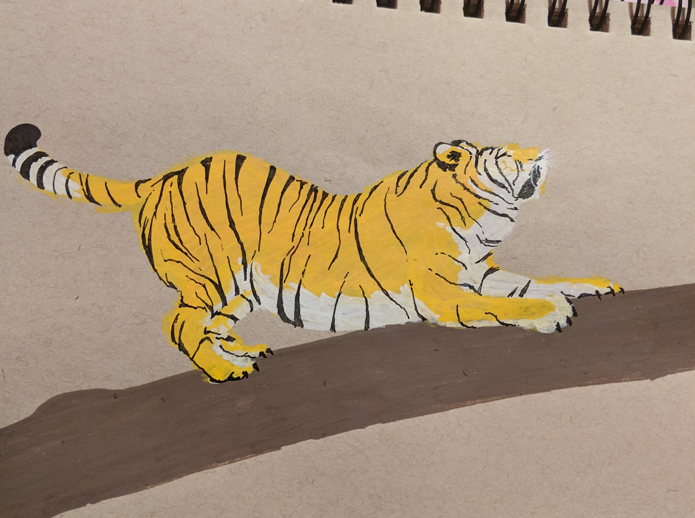
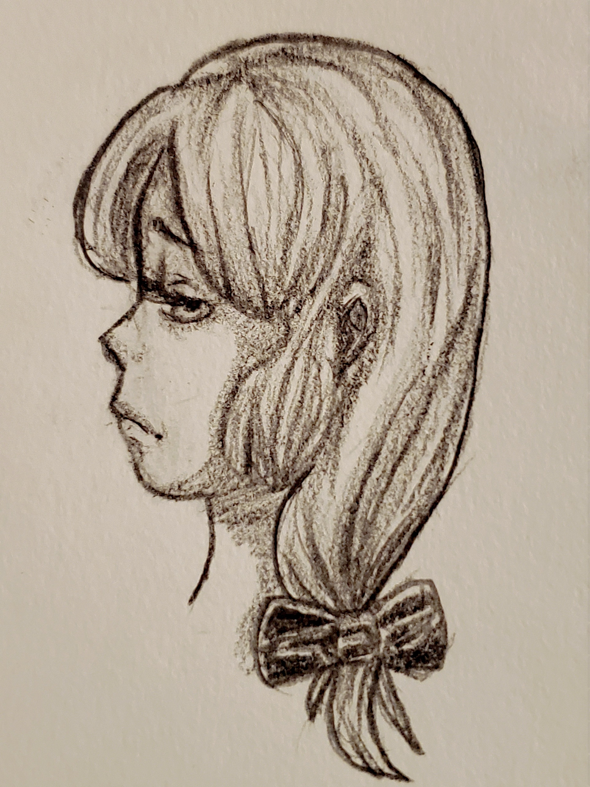
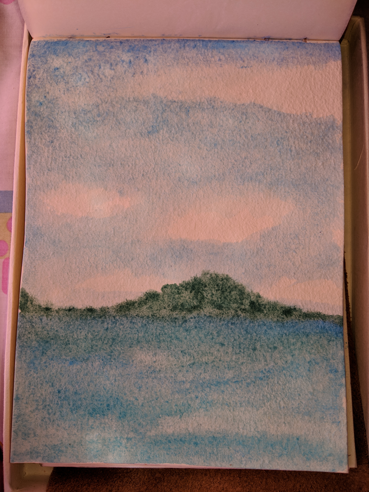

At the second stage of the drawing, I had began with the face, glasses and headphones.

This is the first sketch done in oil pastel to act as my guideline. I was not too worried about how clean my lines were.

This is the final oil pastel drawing of a character called Present Mic. I ended up making any slight changes I saw fit to get the final result.

For this I used pencil to sketch, paint markers for the fur, and a black fineliner and white pen for the stripes and details.

This was done with a single #2 mechanical pencil.

I used only watercolors to paint this.

This was done with a single Crayola crayon.